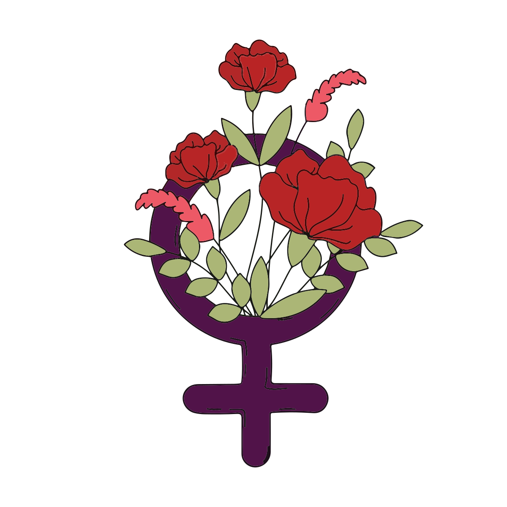

Планету названо іменем давньоримської богині любові та краси Венери, яка в Стародавній Греції була відома як Афродіта. У деяких давніх культурах Венеру у вранішній та вечірній появі вважали різними об'єктами та мали для них різні назви. Так, давні греки називали Венеру в вечірній появі Геспер, що означало «вечірня зоря», а у вранішній — Фосфор, «той, хто приносить світло». Першим, хто зрозумів їхню ідентичність, міг бути Піфагор у VI столітті до н. е., або Парменід у V столітті до н. е.
МІФОЛОГІЯ ВЕНЕРИ
НАЗВИ У РІЗНИХ КУЛЬТУРАХ
У Стародавньому Китаї Венера мала назву «Тай пай», що означало «велика біла зоря». У теорії П'яти Елементів Венера асоціюється з елементом металу.
У Стародавньому Єгипті Венеру називали «Пташка фенікс» або «Чапля» і пов'язували її з богом Осірісом. Лише у Пізній період планета отримала назву «Вранішня зоря», тоді під впливом Месопотамії її стали асоціювати з богом Гором.
Арабською мовою Венеру називають زُهْرَة («зухра»), тобто «яскравість, сяйво».
В івриті існує кілька варіантів назви планети, найбільш поширеною є נֹגַהּ («ноґа»), що має однакове значення з арабською назвою زُهْرَة.
Латинською мовою планета називалася «Люцифер», що, подібно до грецької назви «Фосфор», означало «той, хто приносить світло».
СИМВОЛ ВЕНЕРИ
Вважається, що символ Венери Venus symbol є стилізованою версією дзеркальця богині любові. Також він символізує жіночу стать. За однією із версій, символ походить від скорочення назви планети Венери грецьким письмом.
